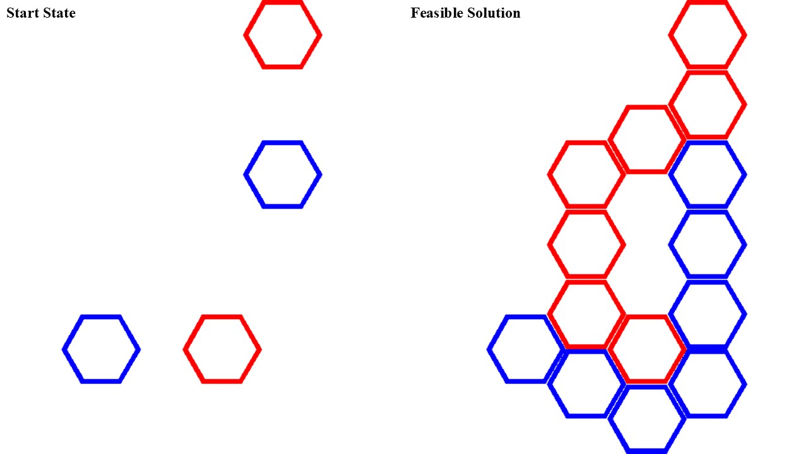

Questacon Hex Puzzle Solver
Background
The Questacon hex puzzle consists of a hexagonal grid with playing pieces of six different colours. Given a starting state consisting of pairs of homogeneous (i.e., same colour) playing pieces, the player must add additional pieces to the grid such that if the set of all playing pieces were partitioned into colour-homogeneous subsets, then each subset would form a fully-connected network. A simple example is shown below:

The aim of the solver was to show that there are no solutions for some of Questacon's starting setups (due to missing pieces). I submitted my findings to Questacon, who acknowledge the mistake (probably not their fault; the exhibition was in a public library after all), and sent new pieces to the exhibition.
How it Works!
- Represent the board as an \(n \times m\) matrix of integers, where \(n\) is the height of the board, and \(m\) is the width of the board. Denote the board matrix \(B\), where \(B_{ij}\) gives the occupation of tile \((i,j)\). \(B_{ij}=0\) indicates an empty tile, \(B_{ij}=k\in\ \mathbb{Z}^+\) indicates an occupied tile of some colour \(k\).
- For each of the \(|k|\) homogeneous pairs in the starting configuration, find all paths between the pairs of tiles; these are referred to as candidate solutions for colour \(k\). Represent each solution as a matrix using the same scheme as for \(B\), and all add all solutions for colour \(k\) to the set \(S_k\), yielding \(k\) sets in total (i.e., a set of feasible solutions for each colour). Note that these candidate solutions should not include the starting tiles - only the intermediate tiles placed by the player.
- Let \(L\) be the cartesian product of sets \( L = \{ S_k \forall k \} \) (i.e., all possible combinations of candidate solutions).
- We now need to find the combinations of solutions in \(L\) which are valid. A combination of candidate solutions is valid if the respective sets of occupied tiles do not intersect with one-another. Representing empty tiles as \(B_{ij}=0\), provides a convenient means of checking whether any two candidate solutions intersect with one-another. Two candidate solutions \(X\) and \(Y\) intersect if and only iff \(\exists i,j\) such that \(X_{ij} \times Y_{ij} \ge 0\). Therefore, for each combination of candidate solutions in \(L\), compare all pairs of candidate solutions for intersections. If no intersections exist, then the solution is valid. (Note that checking for an intersection between solutions \(X\) and \(Y\) is a matter of summing the elements of the matrix produced by an elementwise multiplication of \(X\) and \(Y\), which can vectorised efficiently using PyTorch.)
Admittedly, a simpler method would be to merely check for intersections between sets. I had hoped that the above matrix method would be quicker owing to multithreading via PyTorch. However, in practice, sets would have been easier.
GitHub
GitHub repo for this project: https://github.com/tcox6/hexPuzzle.
*There appears to be an issue with the thumbnail for this project, which skips frames. This is an issue with CloudFare Stream, not me :)